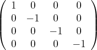
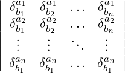

| Up | Next | Prev | PrevTail | Tail |
This package creates an environment which allows the user to manipulate and simplify expressions containing various indexed objects like tensors, spinors, fields and quantum fields.
CANTENS is a package that creates an environment inside REDUCE which allows the user to manipulate and simplify expressions containing various indexed objects like tensors, spinors, fields and quantum fields. Briefly said, it allows him
Beside the above features, it offers the user:
In this package, one cannot find algorithms or even specific objects (i.e. like the covariant derivative or the SU(3) group structure constants) which are of used either in nuclear and particle physics. The objective of the package is simply to allow the user to easily formulate his algorithms in the notations he likes most. The package is also conceived so as to minimize the number of new commands. However, the large number of new capabilities inherently implies that quite a substantial number of new functions and commands must be used. On the other hand, in order to avoid too many error or warning messages the package assumes, in many cases, that the user is reponsible of the consistency of its inputs. The author is aware that the package is still perfectible and he will be grateful to all people who shall spare some time to communicate bugs or suggest improvements.
The documentation below is separated into four sections. In the first one, the space(s) properties and definitions are described.
In the second one, the commands to geberate and handle generic indexed quantities (called abusively tensors) are illustrated. The manipulation and control of free and dummy indices is discussed.
In the third one, the special tensors are introduced and their properties discussed especially with respect to their ability to work simultaneously within several subspaces.
The last section, which is also the most important, is devoted entirely to the simplification function canonical. This function originates from the package DUMMY and has been substantially extended . It takes account of all symmetries, make dummy summations and seeks a “canonical” form for any tensorial expression. Without it, the present package would be much less useful.
When CANTENS is loaded, the packages ASSIST and DUMMY are also loaded.
One can work either in a single space environment or in a multiple space environment. After the package is loaded, the single space environment is set and a unique space is defined. It is euclidian, and has a symbolic dimension equal to dim. The single space environment is determined by the switch onespace which is turned on. One can verify the above assertions as follows wholespace_dim:
One can introduce a pseudoeuclidian metric for the above space by the command signature and verify that the signature is indeed 1:
In principle the signature may be set to any positive integer. However, presently, the package cannot handle signatures larger than 1. One gets the Minkowski-like space metric
|
 |
which corresponds to the convention of high energy physicists. It is possible to change it into the astrophysicists convention using the command global_sign:
This means that the actual metric is now (−1,1,1,1). The space dimension may, of course, be assigned at will using the function wholespace_dim. Below, it is assigned to 4:
When the switch onespace is turned off, the system assumes that this default space is non-existent and, therefore, that the user is going to define the space(s) in which he wants to work. Unexpected error messages will occur if it is not done. Once the switch is turned off many more functions become active. A few of them are available in the algebraic mode to allow the user to properly conctruct and control the properties of the various (sub-)spaces he is going to define and, also, to assign symbolic indices to some of them.
define_spaces is the space constructor and wholespace is a reserved identifier which is meant to be the name of the global space if subspaces are introduced. Suppose we want to define a unique space, we can choose for its any name but choosing wholespace will be more efficient. On the other hand, it leaves open the possibility to introduce subspaces in a more transparent way. So one writes, for instance,:
The arguments inside the list, assign respectively the dimension, the signature and the range of the numeric indices which is allowed. Notice that the range starts from 0 and not from 1. This is made to conform with the usual convention for spaces of signature equal to 1. However, this is not compulsory. Notice that the declaration of the indexrange may be omitted if this is the only defined space. There are two other options which may replace the signature option, namely euclidian and affine. They have both an obvious significance.
In the subsequent example, an eleven dimension global space is defined and two subspaces of this space are specified. Notice that no indexrange has been declared for the entire space. However, the indexrange declaration is compulsory for subspaces otherwise the package will improperly work when dealing with numeric indices.
To remind ones the space context in which one is working, the use of the function show_spaces is required. Its output is an algebraic value from which the user can retrieve all the informations displayed. After the declarations above, this function gives:
If an input error is made or if one wants to change the space framework, one cannot directly redefine the relevant space(s). For instance, the input
which aims to fill all dimensions present in wholespace tells that the space eucl cannot be redefined. To redefine it effectively, one is to remove the existing definition first using the function rem_spaces which takes any number of space-names as its argument. Here is the illustration:
Here, the user is entirely responsible of the coherence of his construction. The system does NOT verify it but will incorrectly run if there is a mistake at this level.
When two spaces are direct product of each other (as the color and Minkowski spaces in quantum chromodynamics), it is not necessary to introduce the global space wholespace.
“Tensors” and symbolic indices can be declared to belong to a specific space or subspace. It is in fact an essential ingredient of the package and make it able to handle expressions which involve quantities belonging to several (sub-)spaces or to handle bloc-diagonal “tensors”. This will be discussed in the next section. Here, we just mention how to declare that some set of symbolic indices belong to a specific (sub-)space or how to declare them to belong to any space. The relevant command is mk_ids_belong_space whose syntax is
For example, within the above declared spaces one could write:
The command mk_ids_belong_anyspace allows to remake them usable either in wholespace if it is defined or in anyone among the defined spaces. For instance, the declaration:
tells that a1 and a2 belong either to mink or to eucl or to wholespace.
The generic tensors handled by CANTENS are objects much more general than usual tensors. The reason is that they are not supposed to obey well defined transformation properties under a change of coordinates. They are only indexed quantities. The indices are either contravariantly (upper indices) or covariantly (lower indices) placed. They can be symbolic or numeric. When a given index is found both in one upper and in one lower place, it is supposed to be summed over all space-coordinates it belongs to viz. it is a dummy index and automatically recognized as such. So they are supposed to obey the summation rules of tensor calculus. This why and only why they are called tensors. Moreover, aside from indices they may also depend implicitly or explicitly on any number of variables. Within this definition, tensors may also be spinors, they can be non-commutative or anticommutative, they may also be algebra generators and represent fields or quantum fields.
The procedure tensor which takes an arbitrary number of identifiers as argument defines them as operator-like objects which admit an arbitrary number of indices. Each component has a formal character and may or may not belong to a specific (sub-)space. Numeric indices are also allowed. The way to distinguish upper and lower indices is the same as the one in the package EXCALC e.g. −a is a lower index and a is an upper index. A special printing function has been created so as to mimic as much as possible the way of writing such objects on a sheet of paper. Let us illustrate the use of tensor:
Notice that the system distinguishes indices from variables on input solely on the basis that the user puts variables inside a list.
The dependence can also be declared implicit through the REDUCE command depend which is generalized so as to allow to declare a tensor to depend on another tensor irrespective of its components. It means that only one declaration is enough to express the dependence with respect to all its components. A simple example:
Therefore, when all objects are tensors, the dependence declaration is valid for all indices.
One can also avoid the trouble to place the explicit variables inside a list if one declare them as variables through the command make_variables. This property can also be removed17 using remove_variables:
If one does that one must be careful not to substitute a number to such declared variables because this number would be considered as an index and no longer as a variable. So it is only useful for formal variables.
A tensor can be easily eliminated using the function rem_tensor. It has the syntax
For all individual tensors met by the evaluator, the system will analyse the written indices and will detect those which must be considered dummy according to the usual rules of tensor calculus. Those indices will be given the dummy property and will no longer be allowed to play the role of free indices unless the user removes this dummy property. In that way, the system checks immediately the consistency of an input. Three functions are at the disposal of the user to control dummy indices. They are dummy_indices, rem_dummy_indices The following illustrates their use as well as the behaviour of the system:
Other verifications of coherence are made when space specifications are introduced both in the ON and OFF onespace environment. We shall discuss them later.
The user must be able to manipulate and give specific characteristics to the generic tensors he has introduced. Since tensors are essentially REDUCE operators, the usual commands of the system are available. However, some limitations are implied by the fact that indices and, especially numeric indices, must always be properly recognized before any substitution or manipulation is done. We have gathered below a set of examples which illustrate all the “delicate” points. First, the substitutions:
The substitution of an index by -0 is the only one case where there is a problem. The operator sub replaces -0 by 0 because it does not recognize 0 as an index of course. Such a recognition is context dependent and implies a modification of sub for this single exceptional case. Therefore,we have opted, not do do so and to use the index 0 which is simply !0 instead of 0.
Second, the assignments. Here, we advise the user to rely on the operator==18 instead of the operator :=. Again, the reason is to avoid the problem raised above in the case of substitutions. := does not evaluate its left hand side so that -0 is not recognized as an index and simplified to 0 while the == operator evaluates both its left and right hand sides and does recognize it. The disadvantage of == is that it demands that a second assignement on a given component be made only after having suppressed explicitly the first assignement. This is done by the function rem_value_tens which can be applied on any component. We stress, however, that if one is willing to use -!0 instead of -0 as the lower 0 index, the use of := is perfectly legitimate:
In the elementary application below, the use of a tensor avoids the introduction of two different operators and makes the calculation more readable.
There is no difference in the manipulation of numeric indices and numeric tensor indices. The function rem_value_tens when applied to a tensor prefix suppresses the value of all its components. Finally, there is no “interference” with i as a dummy index and i as a numeric index in a loop.
Third, rewriting rules. They are either global or local and can be used as in REDUCE. Again, here, the -0 index problem exists each time a substitution by the index -0 must be made in a template.
Notice that the position of the list of variables inside the rule may be chosen at will. It is an irrelevant feature of the template. This may be confusing, so, we advise to write the rules not as above but placing the list of variables in front of all indices since it is in that canonical form which it is written by the simplification function of individual tensors.
The characteristics and the behaviour of generic tensors described up to now are independent of all space specifications. They are complete as long as we confine to the default space which is active when starting CANTENS. However, as soon as some space specification is introduced, it has some consequences one the generic tensor properties. This is true both when onespace is switched ON or OFF. Here we shall describe how to deal with these features.
When onespace is ON, if the space dimension is set to an integer, numeric indices of any generic tensors are forced to be less or equal that integer if the signature is 0 or less than that integer if the signature is equal to 1. The following illustrates what happens.
When onespace is OFF, many more possibilities to control the input or to give specific properties to tensors are open. For instance, it is possible to declare that a tensor belongs to one of them. It is also possible to declare that some indices belongs to one of them. It is even possible to do that for numeric indices thanks to the declaration indexrange included optionally in the space definition generated by define_spaces. First, when onespace is OFF, the run equivalent to the previous one is like the following:
In the run, the new function make_tensor_belong_space has been used. One may be surprised that te(0) is allowed in the end of the previous run and, indeed, it is incorrect that the system allows two different components to te. This is due to an incomplete definition of the space. When one deals with spaces of integer dimensions, if one wants to control numeric indices correctly when onespace is switched off one must also give the indexrange. So the previous run must be corrected to
Notice that the error message has also changed accordingly. So, now one can even constrain the 0 component to belong to an euclidian space.
Let us go back to symbolic indices. By default, any symbolic index belongs to the global space or to all defined partial spaces. In many cases, this is, of course, not consistent. So, the possibility exists to declare that one or several indices belong to a specific (sub-)space. To this end, one is to use the function mk_ids_belong_space. Its syntax is
The function mk_ids_belong_anyspace whose syntax is the same do the reverse operation.
Combined with the declaration make_tensor_belong_space, it allows to express all problems which involve tensors belonging to different spaces and do the dummy summations correctly. One can also define a tensor which has a “bloc-diagonal” structure. All these features are illustrated in the next sections which describe specific tensors and the properties of the extended function canonical.
The means provided in the two previous subsection to handle generic tensors already allow to construct any specific tensor we may need. That the package contains a certain number of them is already justified on the level of conviviality. However, a more important justification is that some basic tensors are so universaly and frequently used that a careful programming of these improves considerably the robustness and the efficiency of most calculations. The choice of the set of specific tensors is not clearcut. We have tried to keep their number to a minimum but, experience, may lead us extend it without dificulty. So, up to now, the list of specific tensors is:
It is important to realize that the typewriter font names in the list are keywords for the corresponding tensors and do not necessarily correspond to their actual names. Indeed, the choice of the names of particular tensors is left to the user. When startting CANTENS specific tensors are NOT available. They must be activated by the user using the function make_partic_tens whose syntax is:
The name chosen may be the same as the keyword. As we shall see, it is never needed to define more than one delta tensor but it is often needed to define several epsilon tensors. Hereunder, we describe each of the above tensors especially their behaviour in a multi-space environment.
It is the simplest example of a bloc-diagonal tensor we mentioned in the previous section. It can also work in a space which is a direct product of two spaces. Therefore, one never needs to introduce more than one such tensor. If one is working in a graphic environment, it is advantageous to choose the keyword as its name. Here we choose delt. We illustrate how it works when the switch onespace is successively switched ON and OFF.
There is a peculiarity of this tensor, viz. it can serve to represent the Dirac delta function when it has no indices and an explicit variable dependency as hereunder
Next we work in the context of several spaces:
The checking of consistency of chosen indices is made in the same way as for generic tensor. In fact, all the previous functions which act on generic tensors may also affect, in the same way, a specific tensor. For instance, it was compulsory to explicitly tell that we want delt to belong to the wholespace make_tensor_belong_space, otherwise delt would remain defined on the default space. In the next sample run, we display the bloc-diagonal property of the delta tensor.
The bloc-diagonal property of delt is made active under two conditions. The first is that the system knows to which space it belongs, the second is that indices must be declared to belong to a specific space. To enforce the same property on a generic tensor, we have to make the make_bloc_diagonal declaration:
and to make it active, one proceeds as in the above run. Starting from a fresh environment, the following sample run is illustrative:
The use of make_partic_tens with the keyword eta allows to create a Minkowski diagonal metric tensor in a one or multi-space context either with the convention of high energy physicists or in the convention of astrophysicists. Any eta-like tensor is assumed to work within a space of signature 1. Therefore, if the space whose metric, it is supposed to describe has a signature 0, an error message follows if one is working in an ON onespace context and a warning when in an OFF onespace context. Illustration:
Since et(a,-a) is evaluated to the corresponding delta tensor, one cannot define properly an eta tensor without a simultaneous introduction of a delta tensor. Otherwise one gets the following message:
So we need to issue, for instance,
The value of its diagonal elements depends on the chosen global sign. The next run illustrates this:
The tensor is of course symmetric . Its indices are checked in the same way as for a generic tensor. In a multi_space context, the eta tensor must belong to a well defined space of signature 1:
If the space to which et belongs to is a subspace, one must also take care to give a space-identity to dummy indices which may appear inside it. In the following run, the index a belongs to wholespaceif it is not told to the system that it is a dummy index of the space mink:
It is an antisymmetric tensor which is the invariant tensor for the unitary group transformations in n-dimensional complex space which are continuously connected to the identity transformation. The number of their indices are always stricty equal to the number of space dimensions. So, to each specific space is associated a specific epsilon tensor. Its properties are also dependent on the signature of the space. We describe how to define and manipulate it in the context of a unique space and, next, in a multi-space context.
The use of make_partic_tens places it, by default, in an euclidian space if the signature is 0 and in a Minkowski-type space if the signature is 1. For higher signatures it is not constructed. For a space of symbolic dimension, the number of its indices is not constrained. When it appears inside an expression, its indices are all currently upper or lower indices. However, the system allows for mixed positions of the indices. In that case, the output of the system is changed compared to the input only to place all contravariant indices to the left of the covariant ones.
When the signature is equal to 1, it is known that there exists two conventions which are linked to the chosen value 1 or -1 of the (0,1,…,n) component. So, the sytem does evaluate all components in terms of the (0,1,…,n) upper index component. It is left to the user to assign it to 1 or -1.
As already said, several epsilon tensors may be defined. They must be assigned to a well defined (sub-)space otherwise the simplifying function canonical will not properly work. The set of epsilon tensors defined associated to their space-name may be retrieved using the function show_epsilons. An important word of caution here. The output of this function does NOT show the epsilon tensor one may have defined in the ON onespace context. This is so because the default space has NO name. Starting from a fresh environment, the following run illustrates this point:
To make the epsilon tensor defined in the single space environment visible in the multi-space environment, one needs to associate it to a space. For example:
Next, let us define an additional epsilon-type tensor:
As previously, the discrimation between symbolic indices may be introduced by assigning them to one or another space :
epsilon-like tensors can also be defined on disjoint spaces. The subsequent sample run starts from the environment of the previous one. It suppresses the space wholespace as well as the space-assignment of the indices a,b,c. It defines the new space mink. Next, the previously defined eps tensor is attached to this space. ep remains unchanged and e1,e2,e3 still belong to the space eucl.
The generalized delta function comes from the contraction of two epsilons. It is totally antisymmetric. Suppose its name has been chosen to be gd, that the space to which it is attached has dimension n while the name of the chosen delta tensor is δ, then one can define it as follows:
|
gdb1,b2,…,bna1,a2,…,an
=  |
It is, in general uneconomical to explicitly write that determinant except for particular numeric values of the indices or when almost all upper and lower indices are recognized as dummy indices. In the sample run below, gd is defined as the generalized delta function in the default space. The main automatic evaluations are illustrated. The indices which are summed over are always simplified:
One can force evaluation in terms of the determinant in all cases. To this end, the switch exdelt is provided. It is initially OFF. Switching it ON will most often give inconveniently large outputs:
In a multi-space environment, it is never necessary to define several such tensor. The reason is that canonical uses it always from the contraction of a pair of epsilon-like tensors. Therefore the control of indices is already done, the space-dimension in which del is working is also well defined.
Very often, one has to define a specific metric. The metric-type of tensors include all generic properties. The first one is their symmetry, the second one is their equality to the delta tensor when they get mixed indices, the third one is their optional bloc-diagonality. So, a metric (generic) tensor is generated by the declaration
By default, when one is working in a multi-space environment, it is defined in wholespace One uses the usual means of REDUCE to give it specific values. In particular, the metric ’delta’ tensor of the euclidian space can be defined that way. Implicit or explicit dependences on variables are allowed. Here is an illustration in the single space environment:
Up to now, we have described the behaviour of individual tensors and how they simplify themselves whenever possible. However, this is far from being sufficient. In general, one is to deal with objects which involve several tensors together with various dummy summations between them. We define a tensor expression as an arbitrary multivariate polynomial. The indeterminates of such a polynomial may be either an indexed object, an operator, a variable or a rational number. A tensor-type indeterminate cannot appear to a degree larger than one except if it is a trace. The following is a tensor expression:
In the above expression, delt and eps are, respectively, the delta and the epsilon tensors, op is an operator. and delt(x-y) is the Dirac delta function. Notice that the above expression is not cohérent since the first term has a variance while the second term is a scalar. Moreover, the dummy index g appears three times in the first term. In fact, on input, each factor is simplified and each factor is checked for coherence not more. Therefore, if a dummy summation appears inside one factor, it will be done whenever possible. Hereunder delt(a,-a) is summed over:
canonical is an offspring of the function with the same name of the package DUMMY. It applies to tensor expressions as defined above. When it acts, this functions has several features which are worth to realise:
Its capabilities have been extended in four directions:
We describe most of these features in the rest of this documentation.
Dummy indices for individual tensors are kept in the memory of the system. If they are badly distributed over several tensors, it is canonical which gives an error message:
The message of canonical is clear, the first sublist contains the list of all lower indices, and the second one the list of all upper indices. The index b is repeated three times. In the second example, b and c are considered as free indices, so they may be repeated. The last example shows the interference between the check on individual tensors and the one of canonical. The use of a as dummy index inside delt does no longer allow a to be used as a free index in expression bb. To be usable, one must explicitly remove it as dummy index using rem_dummy_indices. In the fourth example there are no problems as b and c are both free indices. canonical checks that in a tensor polynomial all do possess the same variance:
In the message the first two lists of incompatible indices are explicitly indicated. So, it is not an exhaustive message and a more complete correction may be needed. Of course, no message of that kind appears if the indices are inside ordinary operators20
For a specific tensor, contravariant dummy indices are place in front of covariant ones. This already leads to some useful simplifications. For instance:
In the second and third example, there is also a renaming of the dummy variable b whih becomes a. There is a loophole at this point. For some expressions one will never reach a stable expression. This is the case for the following very simple monom:
In the above example, no canonical form can be reached. When applied twice on the tensor monom a1 it gives back a1!
No change of dummy index position is allowed if a tensor belongs to an affine space. With the tensor polynomial pp introduced above one has:
The renaming of b has been made however.
This is a central part of the extension of canonical. The required contractions and summations can be done in a multi-space environment as well in a single space environment.
Dummy indices are recognized contracted and summed over whenever possible:
canonical will not attempt to make contraction with dummy indices included inside ordinary operators:
First, we introduce eta:
Let us add a generic metric tensor:
The epsilon tensor plays an important role in many contexts. canonical realises the contraction of two epsilons if and only if they belong to the same space. The proper use of canonical on expressions which contains it requires a preliminary definition of the tensor DEL. When the signature is 0; the contraction of two epsilons gives a del-like tensor. When the signature is equal to 1, it is equal to minus a del-like tensor. Here we choose 1 for the signature and we work in a single space. We define the del tensor:
We define the epsilon tensor and show how canonical contracts expression containing two21 of them:
Several expressions which contain the epsilon tensor together with other special tensors are given below as examples to treat with canonical:
Since canonical is able to work inside several spaces, we can introduce also several epsilons and make the relevant simplifications on each (sub)-spaces. This is the goal of the next illustration.
If there are no index summation, as in the expression above, one can develop both terms into the delta tensor with exdelt switched ON. In fact, the previous calculation is correct only if there are no dummy index inside the two gd’s. If some of the indices are dummy, then we must take care of the respective spaces in which the two gd tensors are considered. Since, the tensor themselves do not belong to a given space, the space identification can only be made through the indices. This is enough since the delta-like tensor is bloc-diagonal. With aa the result of the above illustration, one gets, for example,:
Most of the time, indexed objects have some symmetry property. When this property is either full symmetry or antisymmetry, there is no difficulty to implement it using the declarations symmetric or antisymmetric of REDUCE. However, most often, indexed objects are neither fully symmetric nor fully antisymmetric: they have partial or mixed symmetries . In the DUMMY package, the declaration symtree allows to impose such type of symmetries on operators. This command has been improved and extended to apply to tensors. In order to illustrate it, we shall take the example of the wellknown Riemann tensor in general relativity. Let us remind the reader that this tensor has four indices. It is separately antisymmetric with respect to the interchange of the first two indices and with respect to the interchange of the last two indices. It is symmetric with respect to the interchange of the first two and the last two indices. In the illustration below, we show how to express this and how canonical is able to recognize mixed symmetries:
In the last illustration, contravariant indices are placed in front of covariant indices and the contravariant indices are transposed. The superposition of the two partial symmetries gives a minus sign.
There exists an important (though natural) restriction on the use of SYMTREE which is linked to the algorithm itself: Integer used to localize indices must start from 1, be contiguous and monotoneously increasing. For instance, one is not allow to introduce
but the subsequent declarations are allowed:
The first declaration endows r with a partial symmetry with respect to the first two indices.
A side effect of symtree is to restrict the number of indices of a generic tensor. For instance, the second declaration in the above illustrations makes r depend on 5 indices as illustrated below:
Finally, the function remsym applied on any tensor identifier removes all symmetry properties.
Another related question is the frequent need to symmetrize a tensor polynomial. To fulfill it, the function symmetrize of the package ASSIST has been improved and generalised. For any kernel (which may be either an operator or a tensor) that function generates
Moreover, if it is given a list of indices, it generates a new list which contains sublists which contain the relevant permutations of these indices
If one wants to symmetrise an expression which is not a kernel, one can also use symmetrize to obtain the desired result as the next example shows:
Only ordinary (partial) derivatives are fully correctly handled by canonical. This is enough, to explicitly construct covariant derivatives. We recognize here that extensions should still be made. The subsequent illustrations show how canonical does indeed manage to find the canonical form and simplify expressions which contain derivatives. Notice, the use of the (modified) depend command.
In the last example, after contraction, the covariant dummy index b has been changed into the contravariant dummy index a. This is allowed since the space is metric.
| Up | Next | Prev | PrevTail | Front |